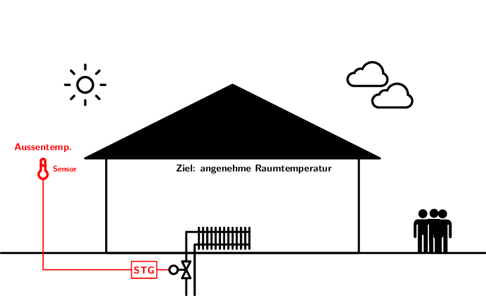
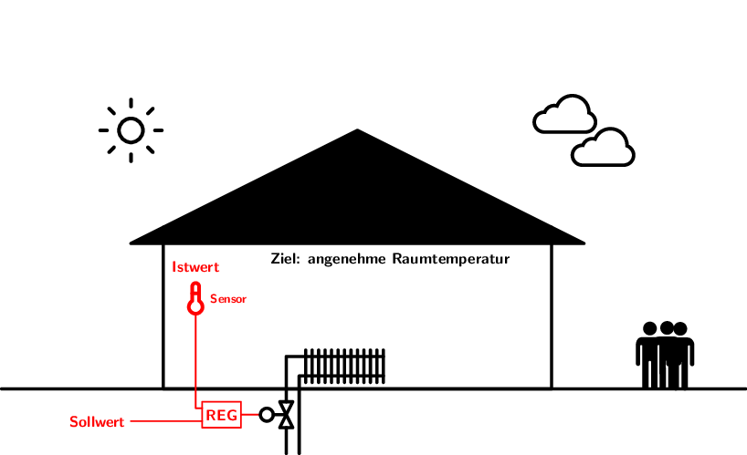

1 Einführung
Im ersten Kapitel beschäftigen wir uns mit der Frage, was Regelungstechnik ist und was der Unterschied zwischen einer Regelung und einer Steuerung ist. Wir lernen das Blockschaltbild (BSB) kennen, um eine Steuerung/Regelung in einheitlicher Form darzustellen.
- Du kannst den Unterschied zwischen einer Steuerung und einer Regelung erklären.
- Du kennst das Blockschaltbild als Werkzeug zur Darstellung von Steuerketten bzw. Regelkreisen.
- Du kannst ein reales System in ein Blockschaltbild überführen.
- Du kannst die Elemente und Grössen des vereinfachten Regelkreises (Standardregelkreis) auswendig benennen und ihre Funktion erklären.
1.1 Warum brauchen wir Regelungstechnik?
In vielen technischen Systemen (z. B. Heizung, Motorsteuerung, Flugzeugstabilisierung) müssen physikalische Grössen (Temperatur, Geschwindigkeit, Position) auf einem gewünschten Wert gehalten oder einem vorgegeben Verlauf folgen. Die Regelungstechnik bietet die theoretischen und praktischen Werkzeuge, um diese Thematik zu behandeln.
Die Regelungstechnik ermöglicht uns:
- Systeme zu stabilisieren, die von Natur aus instabil sind.
- Störungen zu kompensieren, die das System negativ beeinflussen.
- die Leistung von Systemen zu verbessern, indem wir sie schneller und genauer machen.
- Energie zu sparen, indem wir nur so viel Energie einsetzen, wie nötig ist, um die gewünschte Leistung zu erreichen.
- Prozesse zu automatisieren, um menschliche Arbeit zu reduzieren und die Effizienz zu steigern.
Ihr kennt unzählige Beispiele für regelungstechnische Anwendungen aus dem Alltag oder dem Arbeitsleben. Wir schauen uns nachfolgend exemplarisch einige spektakuläre Anwendungen an.
Wir werden uns vorwiegend mit technischen Systemen befassen, doch die Regelungstechnik findet auch in anderen Bereichen Anwendung, z. B. in der Biologie (Regulation von Körpertemperatur), Wirtschaft (Geldpolitik) und Soziologie (soziale Dynamiken).
1.2 Steuern vs. Regeln
Aus dem Alltag kennen wir die Begriffe Steuerung und Regelung, doch wir verwenden diese teilweise gleichbedeutend bzw. inkorrekt. Als erstes müssen wir uns daher den Unterschied zwischen Steuern und Regeln klarmachen1. Dazu betrachten wir das Beispiel einer Gebäudeheizung.
Bekanntermassen besteht das Ziel einer Gebäudeheizung darin, eine für den Menschen angenehme Temperatur zu erreichen (die durchaus je nach Raumnutzung/Tageszeit usw. variieren kann).
1.2.1 Steuerung
Im untenstehenden Beispiel wird die Aussentemperatur gemessen und abhängig davon die Heizung mehr oder weniger aufgedreht, womit mehr oder weniger Wärme an den Raum abgegeben wird.

Aus Sicht der Steuerungs-/Regelungstechnik können wir folgende Elemente identifizieren:
- Raum mit Heizkörper
- Das ist das eigentliche System, das beeinflusst werden soll - wir nennen es Strecke (weil es sich hier um eine Steuerung handelt folglich Steuerstrecke).
- Ventil
- Mit diesem Element - wir nenen es allg. Stellglied - greifen wir in das System ein, indem durch die Ventilstellung mehr oder weniger Wasser durch den Heizkörper fliesst und dadurch mehr oder weniger Wärme an den Raum abgegeben wird.
- Steuergerät
- In diesem Element ist die eigentliche Intelligenz/Logik enthalten, die den Zusammenhang zwischen Aussentemperatur und Ventilstellung entsprechend einer hinterlegten Funktion/Kennlinie herstellt und das Ventil entsprechend verstellt.
- Temperatursensor
- Für die Erfassung der Aussentemperatur wird ein Temperatursensor verwendet - wir sprechen allg. von Sensor oder Messglied.
- Sonne, Raumbelegung, Fenster/Türen
- Einflussfaktoren, die wir nicht direkt kontrollieren können und aus steuerungs-/regelungstechnischer Sicht negativ auf unser System einwirken nennen wir allg. Störgrössen2.
Wollen wir die obige Darstellung auf (die aus Sicht der Steuerungs-/Regelungstechnik) relevanten Komponenten reduziern, so landen wir bei der nachfolgenden Darstellung.
Wir nennen diese Art der Darstellung Blockschaltbild (oder auch Wirkungsplan), da die einzelnen Komponenten als Blöcke dargestellt werden, welche jeweils einen Eingang und Ausgang haben und somit den Wirkzusammenhang (Ursache → Wirkung) zwischen dem jeweiligen Ein- und Ausgang repräsentieren.
Da es sich im obigen Beispiel um eine Steuerung handelt, bezeichnen wir Abb. 1.6 auch als Steuerkette.
Betrachte nochmals Abb. 1.5 und überlege dir, warum die Steuerung vermutlich nicht in der Lage ist, immer eine gleichbleibende, angenehme Raumtemperatur zu gewährleisten.
1.2.2 Regelung
Nun betrachten wir das Beispiel der Raumtemperatur-Regelung.
Vergleiche die nachfolgende Abbildung mit derjenigen der Steuerung und überlege dir, was wohl aus regelungstechnischer Sicht der fundamentale Unterschied ist.

Wiederum wollen wir die Situation von unnötigen/irrelevanten Details befreien und das entsprechende Blockschaltbild betrachten.
In dieser Darstellung wird der entscheidende Unterschied zwischen der Regelung und der Steuerung sofort klar. Anders als bei der Steuerung wird die Ausgangsgrösse (Raumtemperatur) effektiv gemessen (Istwert) und kann dadurch direkt mit dem Sollwert verglichen werden. Wir haben also eine Rückführung (auch Rückkopplung genannt, engl. Feedback) und bezeichnen Abb. 1.8 daher als Regelkreis.
Das Prinzip der Regelung ist das fortlaufende Messen (des Istwerts), das Vergleichen (mit dem Sollwert) und das Stellen (d. h. das Einwirken auf die Regelstrecke).
Mit der Rückführung kann die Regelung auf Störungen (z. B. offene Fenster, Sonneneinstrahlung) reagieren und die Stellgröße entsprechend anpassen, um die gewünschte Raumtemperatur zu halten. Die Steuerung hingegen würde in solchen Situationen nicht automatisch reagieren, da sie keine Rückmeldung über die tatsächliche Raumtemperatur erhält.
Mit dem oben herausgearbeiteten Unterschied zwischen der Steuerung und der Regelung können wir folgende Definitionen formulieren:
Die Ausgangsgrösse (Istwert) wird fortlaufend erfasst und mit dem gewünschten Wert (Sollwert) verglichen und dahingehend beeinflusst, dass eine Angleichung der Ausgangsgrösse an den Sollwert erfolgt.
Die Regelung zeichnet sich durch den geschlossenen Wirkungsablauf aus, da die Ausgangsgrösse zurückgeführt wird und sich selbst beeinflusst (Rückführung bzw. Feedback).
Die Steuerung beeinflusst die Ausgangsgrösse anhand der Eingangsgrösse(n) gemäss bestimmten Gesetzmässigkeiten, ohne jedoch eine Rückführung der Ausgangsgrösse zu verwenden.
Die Steuerung zeichnet sich durch den offenen Wirkungsablauf aus, da keine Rückwirkung der Ausgangsgrösse auf sich selbst erfolgt.
Die Regelung stellt gegenüber der Steuerung das überlegene Prinzip dar, bedarf aber mehr Aufwand (Geräte, Auslegung, Knowhow etc.), d. h. sofern eine Steuerung ausreicht, ist diese zu bevorzugen. Eine Regelung ist häufig dann nötig, wenn
- eine hohe Genauigkeit gefordert wird,
- die Strecke inherent instabil ist,
- die Strecke nicht hinreichend bekannt ist und/oder die Parameter der Strecke sich im Betrieb ändern oder
- mit unbekannten/nicht messbaren Störungen zu rechnen ist.
1.2.3 Führungs- vs. Störverhalten
Die Aufgabe einer Regelung kann wie oben bereits erwähnt folgendermassen definiert werden:
Bestimmte zeitveränderliche Grössen technischer (oder auch andersartiger) Prozesse sollen auf gewünschte Werte gebracht und dort gehalten werden bzw. einem vorgegebenen Verlauf folgen.
Wir können also folgende zwei Situationen unterscheiden:
- Festwertregelung
- Der Istwert (auch Regelgrösse genannt) soll möglichst nicht vom konstanten Sollwert (auch Führungsgrösse genannt) abweichen. Wir haben also einen festen Sollwert, d. h. die Aufgabe besteht vor allem darin, dass Störungen möglicht wenig Einfluss auf die Regelgrösse haben. ➔ Das Störverhalten steht primär im Fokus.
- Folgeregelung
- Die Regelgrösse (Istwert) soll Änderungen der zeitlich veränderlichen Führungsgrösse (Sollwert) möglichst gut folgen. Wir haben also einen veränderlichen Sollwert (Sollwertverlauf). ➔ Das Führungsverhalten steht primär im Fokus.
Betrachte das untenstehende Video und überlege dir, wann das Führungsverhalten und wann das Störverhalten zu sehen ist.
Back to the Roots
Das Prinzip der Regelung wurde schon lange vor der Etablierung der entsprechenden Theorien eingesetzt. Ein sehr bekanntes Beispiel aus dem 18. Jahrhundert ist der Fliehkraftregler, mit dem die Drehzahl bei Dampfmaschinen geregelt wurde. Dieser zeigt das Prinzip der Rückführung (wir sprechen auch von negativer Rückkopplung) sehr schön.

Erkläre, warum es sich in Abb. 1.11 um eine Regelung und keine Steuerung handelt.
Der Mensch als Regler
Als Mensch regeln wir im Alltag - meistens unbewusst - sehr komplexe Systeme. Denke z. B. ans Radfahren, wo relativ mühelos gleichzeitig Gleichgewicht, Geschwindigkeit sowie Richtung geregelt werden.
Betrachte Abb. 1.12 und versuche Regelstreck, Messglied (Sensor), Regler sowie Stellglied für die vorliegende Situation zu bestimmen. Klicke auf das Bild, um deine Lösung zu überprüfen.
1.3 Blockschaltbild (BSB)
Für die Darstellung von Steuerketten bzw. Regelkreisen verwenden wir das Blockschaltbild (BSB) (auch Wirkungsplan genannt). Ein Blockschaltbild ist aus den folgenden drei Elementen aufgebaut:
Jede Systemkompente (Regler, Stellglied, Sensor) wird im Blockschaltbild als Übertragunsglied (Block) dargestellt und symbolisiert den wirkungsgemässen Zusammenhang zwischen der Ein- und der Ausgangsgrösse. Die Eingangsgrösse stellt somit die Ursache und die Ausgangsgrösse die Wirkung dar.
1.3.1 Elemente des Regelkreises
Wie wir oben gesehen haben, findet man in einem typischen Regelkreis Regler, Stellglied, Regelstrecke, Sensor etc. und je nach Analyse wird das Blockschaltbild mehr oder weniger ausführlich dargestellt (Blöcke werden mehr oder weniger zusammengefasst).
Im einfachsten Fall besteht der Regelkreis lediglich aus zwei Übertragungsgliedern (Blöcken), dem Regler (RE) und der Regelstrecke (RS), in der das Stellglied und das Messglied enthalten sind.
Damit wir die Signale im Standardregelkreis unabhängig von der konkreten Anwendung benennen können, verwenden wir die folgenden allgemeinen Bezeichnungen:
- Führungsgrösse \(w\) (Sollwert)
- Der gewünschte Wert, den die Ausgangsgröße (Regelgrösse) erreichen soll.
- Regelabweichung \(e\)
- Differenz zwischen Führungsgrösse und Regelgrösse (\(e = w -x\)).
- Stellgrösse \(y\)
- Die vom Regler ausgegebene Grösse, welche auf das Stellglied wirkt und somit in die Regelstrecke eingreift.
- Regelgrösse \(x\) (Istwert)
- Die gemessene Ausgangsgröße, die tatsächlich erreicht wird (z. B. Raumtemperatur). Die Regelgrösse wird zurückgeführt und mit der Führungsgrösse verglichen.
- Störgrösse \(z\)
- Eine ungewollte Einflussgröße, die das System beeinflusst (z. B. offene Fenster, Sonneneinstrahlung).
Die beiden Blöcke im Standardregelkreis sind:
- Regler (RE)
- Der Regler gibt je nach Regelabweichung eine grössere/kleinere Stellgrösse aus. Im Regler steckt sozusagen die Intelligenz, um die Regelgrösse (Istwert) möglichst auf die Führungsgrösse (Sollwert) zu bringen.
- Regelstrecke (RS)
- Die Regelstrecke ist das eigentliche System, das geregelt werden soll. Die Regelstrecke enthält in dieser Darstellung das Stellglied und das Messglied (Sensor), diese liegen daher nicht als separate Blöcke vor.
Übungen
Präge dir den Standardregelkreis (vgl. Abb. 1.15) mit sämtlichen Grössen/Symbolen so gut ein, dass du ihn auswendig aufzeichnen und vollständig beschriften/benennen kannst.
Suche in deinem Betrieb, deinem Zuhause oder auch andernorts (Arbeitsweg, Freizeit, …) ein Beispiel einer Regelung oder Steuerung und dokumentiere diese gemäss untenstehenden Punkten auf ein paar wenigen Powerpoint-Folien. Eine Vorlage ist auf TEAMS zu finden.
Folgende Punkte sollten enthalten sein (sofern möglich):
- Ein möglichst übersichtliches Foto der Situation
- Was wird geregelt (Regelgrösse)?
- Wie wird die Führungsgrösse (Sollwert) generiert bzw. woher kommt der Sollwert?
- Wie wird der Istwert (Regelgrösse) erfasst/gemessen?
- Welche allfälligen Störgrössen können auftreten?
- Erstelle ein vereinfachtes Blockschaltbild
Installiere die Simulationssoftware BORIS (WinFACT). Die Installationsdatei kann vom InfoPoint bezogen werden. WinFACT
Im Englischen wird der Begriff Control sowohl für Steuerung als auch für Regelung verwendet, deshalb werden zur Unterscheidung die Begriffe open-loop control (für Steuerung) und closed-loop/feedback control (für Regelung) verwendet. Diese Begriffe beschreiben den Unterschied sehr treffend.↩︎
Der Begriff Störung bzw. Störgrösse hat in der Regelungstechnik nichts mit einer Fehlfunktion zu tun, sondern beschreibt eine Einflussgrösse, welche aus unserer Sicht störend auf das zu steuernde/regelnde System einwirkt.↩︎